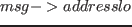
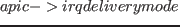
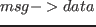
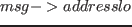
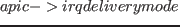
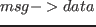
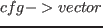

msi_compose_msg でレジスタに書き込みたい値を用意しているので、これを見てみる。
がMSIARレジスタで、
が0ならphysical mode、1ならlogical modeを設定、
がdest_LowestPrioならRedirectable（MSI_ADDR_REDIRECTION_LOWPRI）を、そうでなければDirected（MSI_ADDR_REDIRECTION_CPU）を設定、変数destをDestination IDとして設定している。
でレジスタに書き込みたい値を用意しているので、これを見てみる。
がMSIARレジスタで、
が0ならphysical mode、1ならlogical modeを設定、
がdest_LowestPrioならRedirectable（MSI_ADDR_REDIRECTION_LOWPRI）を、そうでなければDirected（MSI_ADDR_REDIRECTION_CPU）を設定、変数destをDestination IDとして設定している。
がMSIDRレジスタで、
がdest_LowestPrioならLowest priorityを、そうでなければFixedを設定、 の値をInterrupt Vectorとして設定している。
の値をInterrupt Vectorとして設定している。
と
の値はIO APICのドライバ毎に違うのだが、x86_64の標準ドライバのapic_flat_64.c ではirq_dest_modeは1, irq_delivery_modeはdest_LowestPrioに設定されている。
ではirq_dest_modeは1, irq_delivery_modeはdest_LowestPrioに設定されている。
これらの値は割り込み初期化時に設定され、/proc/irq/<IRQ>/smp_affinityの書き換え時にも維持される。
smp_affinityの書き換え時には、Destination IDとInterrupt Vectorだけが変更される 。
。
全ての環境でLogical modeかつLowest priorityが使えるとは限らないので、場合によってはPhysical Modeで初期化されていてsmp_affinityの値を0xffにしてもCPU0にしか割り込まないという挙動を行う事も有り得る。 実際、論理CPUが12個あるCore i7上でLinux 3.2.0+を走らせている環境ではExtended Physical Modeで初期化されていて、割り込み分散が行われていなかった。